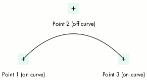
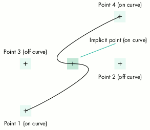

The QuickDraw GX graphics system is based on shape objects that are used by
reference. An application creates a shape object such as a path or a polygon by passing
in data that represents the geometric points of the shape to be drawn or otherwise
manipulated. The QuickDraw GX graphics system then stores this information in its
internal database and returns to the application a reference to the shape object. This
reference is then passed to the various QuickDraw GX routines that perform operations
on the shape.
Since the QuickDraw GX graphics system is maintaining the original data in its
database, the application often won't keep this data around. Also, an application may not
even have created the geometric points in the first place, as in the case of converting
text into a path.
It's often desirable, for a variety of purposes, for an application to retrieve the
geometric information from a shape object. Given the richness of geometric
information that these objects can contain, it can be a nontrivial task to read back the
information. This column describes a C library that any application can incorporate
for the purpose of traversing the geometric information in QuickDraw GX paths.
The QuickDraw GX graphics system provides several types of graphics primitives with
which to create visual content: lines, curves, polygons, paths, typography, and
bitmaps. In this system, curves are quadratic BÉziers that can be defined by three
control points, the middle point being off the curve and the other two being on. Figure
1 depicts a single quadratic curve segment.

Figure 1. A QuickDraw GX quadratic curve segment
A QuickDraw GX path object is just a conglomeration of curve and line segments,
resulting from an array of points. The object can contain multiple contours, each
contour being a group of connected segments.
The question arises, if we look at a specific point in a path structure, whether the
point is part of a line segment or part of a curve segment. The answer is that in
addition to the points themselves, a path contains an array of flags, one for each point,
indicating whether the point is on or off the path. To represent a single contour for a
path object, QuickDraw GX uses the gxPath data structure:
struct gxPath {
long vectors;
long controlBits[1];
struct gxPoint vector[1];
};
typedef struct gxPath gxPath;
The vectors field is an integer that specifies the number of points in the contour, the
controlBits field is a bit array representing the on-curve/off-curve flags, and the
vector field is an array of points for the contour.
To represent a path object, QuickDraw GX uses the gxPaths data structure:
struct gxPaths {
long contours;
struct gxPath contour[1];
};
typedef struct gxPaths gxPaths;
The contours field is an integer specifying the number of contours, and the contour
field is an array of gxPath structures, one for each contour.
Hence we have enough information to figure out what the points mean. If we see two
on-path points in a row, we know that represents a line. If we see an on-path point
followed by an off-path point followed by an on-path point, we know that's a quadratic
curve segment.
So to read the QuickDraw GX path object to determine the actual shape, all we have to
do is get a point and then get the next point. According to the previous description, it
would be safe to assume that the very first point in a contour is an on-path point.
Then, if the next one were also on the path, we'd have a line; if it were off, we'd know
that we'd have to read a third one (which by definition would have to be on) and we'd
have a curve.
The only trouble is that those assumptions aren't necessarily true. The design of
QuickDraw GX could have restricted applications to using only those patterns of
on-path/off-path points, disallowing two consecutive off-path points and requiring
the first point and the last point in a contour to be on the path; however, it didn't.
In the interest of saving memory, QuickDraw GX allows two consecutive off-path
points to imply a middle on-path point -- known as an implicit point -- exactly
halfway between the off-path points. An example of this is shown in Figure 2.

Figure 2. A QuickDraw GX quadratic path
For each implicit point there's a memory savings of 8 bytes in QuickDraw GX. This
allows us to define geometries in less space than would be required in other popular
graphics models that use cubic BÉzier curves without implicit points, but it does
complicate traversing the path.
QuickDraw GX also allows the first or the last point of a contour to be off the curve, in
the case where the contour is closed. This further complicates path traversal.
You can use the ShapeWalker library (which is included on this issue's CD) to avoid
having to write a huge blob of code to deal with all those points and flags discussed
above. It allows an application to pass in a QuickDraw GX shape object and be sent back
(via callbacks) each line and curve segment in the shape. All implicit points are
resolved by the library, so the client sees only complete line or curve segments.
The header file to be used with the library defines types for four callbacks and a
prototype for the ShapeWalker function:
// Function is called to move to a new point
// (start new contour).
typedef Boolean (*TpwMovetoProc)(gxPoint *p,
void* refcon);
// Function is called to draw a line from
// current point to p.
typedef Boolean (*TpwLinetoProc)(gxPoint *p,
void* refcon);
// Function is called to draw a curve from
// current point (which will be p[0]) through
// p[1] to p[2].
typedef Boolean (*TpwCurvetoProc)(gxPoint p[3],
void* refcon);
// Function is called to close a contour.
typedef Boolean (*TpwClosepathProc)
(void* refcon);
// Return result will be true if path walking
// was terminated by one of the callbacks.
Boolean ShapeWalker(gxShape theShape,
TpwMovetoProc DoMoveto,
TpwLinetoProc DoLineto,
TpwCurvetoProc DoCurveto,
TpwClosepathProc DoClosepath,
void* refcon);
When using the library, you provide four callbacks and a refcon. Each callback will get
passed the refcon and possibly point information. It's suggested that the client maintain
whatever state information is necessary for the purpose at hand. The refcon can be a
pointer to a structure containing the state information. One typical component of such
information that most clients would need is the notion of the current point. The
current point is the piece of the path we've looked at most recently, representative of
the state of processing the shape. This current point should be updated as segments
come through the callbacks. (We'll see this in a moment in our sample application.)
Each callback must also return a result of type Boolean, giving the client a mechanism
for causing the library to terminate traversal of the shape before completion. Return
false and the shape walker will continue on to the next segment; return true and it will
terminate early. This can be used to catch errors in processing the points, or to
terminate processing if you've finished with the shape before the last point is reached.
The four callbacks are as follows:
The code shown in Listing 1 is a sample application (SamplePathWalker.c) that
converts a piece of text to a path and then uses the ShapeWalker library to read the
points from the result. In this example the callback procedures are used only to print
out the points in the segments, but of course they can be used to do a lot of other things
as well.
______________________________
Listing 1. Sample application using the ShapeWalker library
// The following structure is used to maintain a state while
// walking a shape.
typedef struct {
gxPoint currentPoint; // current point
gxPoint firstPoint; // first point in contour
} TestWalkRec;
#define fix2float(x) ((double)x / 65536.0)
Boolean TestMoveto(gxPoint *p, TestWalkRec* pWalk);
Boolean TestMoveto(gxPoint *p, TestWalkRec* pWalk)
{
printf("Begin new contour: %f, %f\r\n", fix2float(p->x),
fix2float(p->y));
pWalk->currentPoint.x = p->x;
pWalk->currentPoint.y = p->y;
pWalk->firstPoint.x = p->x;
pWalk->firstPoint.y = p->y;
return (false);
}
Boolean TestLineto(gxPoint *p, TestWalkRec* pWalk);
Boolean TestLineto(gxPoint *p, TestWalkRec* pWalk)
{
printf("Line from %f, %f to %f, %f\r\n",
fix2float(pWalk->currentPoint.x),
fix2float(pWalk->currentPoint.y),
fix2float(p->x), fix2float(p->y));
pWalk->currentPoint.x = p->x;
pWalk->currentPoint.y = p->y;
return (false);
}
Boolean TestCurveto(gxPoint p[3], TestWalkRec* pWalk);
Boolean TestCurveto(gxPoint p[3], TestWalkRec* pWalk)
{
printf("Curve from %f, %f through %f, %f, to %f, %f\r\n",
fix2float(p[0].x), fix2float(p[0].y),
fix2float(p[1].x), fix2float(p[1].y),
fix2float(p[2].x), fix2float(p[2].y));
pWalk->currentPoint.x = p[2].x;
pWalk->currentPoint.y = p[2].y;
return (false);
}
Boolean TestClosepath(TestWalkRec* pWalk);
Boolean TestClosepath(TestWalkRec* pWalk)
{
printf("Closing the contour\r\n\r\n");
pWalk->currentPoint.x = pWalk->firstPoint.x;
pWalk->currentPoint.y = pWalk->firstPoint.y;
return (false);
}
main()
{
gxShape theShape;
gxPoint location = {ff(100), ff(100)};
TestWalkRec walker;
Boolean result;
theShape = GXNewText(5, "Hello", &location);
GXSetShapeTextSize(theShape, ff(50));
GXSetShapeType(theShape, gxPathType);
GXSetShapeFill(theShape, gxClosedFrameFill);
result = ShapeWalker(theShape, TestMoveto, TestLineto,
TestCurveto, TestClosepath, &walker);
GXDisposeShape(theShape);
}
______________________________
The files PathWalking.h and PathWalking.c are all that are required to use the
ShapeWalker library in your application (for the sake of brevity, PathWalking.c isn't
shown in this column). This library should make it easy for your application to
process QuickDraw GX path objects. For completeness, the library will also process
curve objects, line objects, rectangle objects, and polygon objects in a similar
manner. All other shape types will result in the posting of the
"illegal_type_for_shape" graphics error. (Graphics errors can be polled with the
GXGetGraphicsError function.) The ShapeWalker library is actually based on the same
code used by QuickDraw GX in its built-in GX-to-PostScript translator for printing.
The library's versatility means that its uses in your application are limited only by
your imagination, so get creative and try it out!
DANIEL I. LIPTON (daniel_lipton@powertalk.apple.com) has worked at Apple for
seven years and is one of the original QuickDraw GX team members. In his spare time,
Dan runs a small business repairing perpetual motion machines.*
Thanks to Dave Hersey, Ingrid Kelly, and Dave Polaschek for reviewing this
column.*